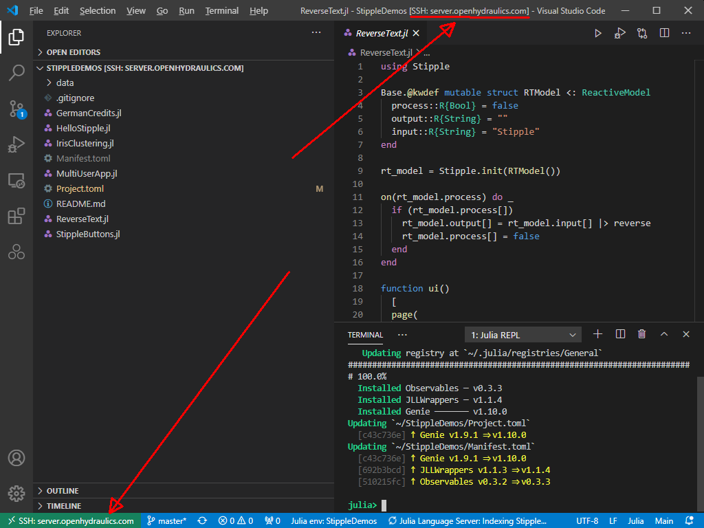

The hardest thing about trying to do something new with computers these days is that it is hard to focus on the one new thing I am trying to learn. I want to start working on setting up a web server to implement engineering calculations at openhydrualics.com because I want them to be open and easy for anyone to use. This post is the saga I have been through to get to where I am today, a working web server that I can access to create the website I want.
I volunteer on an ISO, International Organization for Standardization, committee writing a new standard for calculating derived displacement for the hydraulics industry. As I have listened to what is going on in the tech world, I have seen things like Alliance for Open Media (AOM). AOM has united businesses in collaboration to develop the next generation of video codecs called AV1. I want to do similar things in the hydraulics industry to save money and time, and move the world forward. It is a great way to impact the world, and it is my part in making the world we live in a better place. Therefore, I thought that building a unified implementation of hydraulic engineering calculations that are open source and delivered via the web is a great way to tie all of this together. This may end up being a non-profit, or it may just be an open-source project. We will see, and I am still exploring this. The real point today is getting the environment set up so that I can develop a web application.
The first thing I had to decide was what programming language and toolset I would use to develop my web app. I know MATLAB really well. I would love to use MATLAB. To quote MATLAB help related to web apps:
MATLAB web apps are designed to run only within a trusted intranet environment, not in the open Internet. For more information, see Potential Risks.
https://www.mathworks.com/help/compiler/web-apps.html
So this looked like a nonstarter using MATLAB. Besides, was I going to pay for using MATLAB plus several toolboxes? Maybe. MATLAB is about $2000, with each toolbox costing another $2000. That isn't too bad if all I had to pay was $4000-5000 plus a few days; this would be time-efficient. However, it isn't a real option.
I started exploring other web apps such as Google Colab, Streamlit (Python), Genie (Julia), and Blockpad. Google Colab isn't right because it requires sign-in and knowledge to use a Jupyter notebook with Python for my users. Blockpad is interesting but too basic for what I need; i.e., I need linear algebra and scientific computing. The Julia language was built for scientific computing. Genie was built to create web apps and looks good. Streamlit looks really good too. I want to learn Julia more than I want to learn Python because I tend to write scientific computing programs. As I have explored Genie and Julia, I am more sold that it is a good general direction.
Hosting was the next thing to consider. My website, jasonhnicholson.com, is hosted on Bluehost shared hosting. I learned that shared hosting is extremely locked down. I cannot use Julia or Python on the shared hosting platform in flexible enough ways. I had to compile python from scratch, which would have been fine if it worked, but it didn't. It failed to compile correctly, which left me with a broken Python. I also tried Julia but received errors related to shared libraries (shown below), which told me that compiling was just a waste of time. I spent a whole weekend trying to solve the "Is shared hosting a good solution" question. I think shared hosting is not a good solution for running Julia or Python for my expertise level. It costs too much time.
user1@jasonhnicholson.com [~]# julia
julia: error while loading shared libraries: libjulia.so.1: cannot open shared object file: No such file or directory
user1@jasonhnicholson.com [~]#Next up was I tried Virtual Private Server (VPS) for Bluehost, a step up compared to shared hosting. It gave access to a CentOS server with a package manager for around $30 a month; it could be cheaper, but I am paying monthly, so I don't get it cheaper for a yearly subscription. Other services are cheaper, but I have used Bluehost for a while. Time is worth more than learning another hosting platform. Long term, I may do something different.
VPS was easier to work with than shared hosting. The downside was that it took a whole four days to get things working correctly between SSH, CPanel, WHM, Julia, yum, rpm, CentOS, Julia, bash, and more. If some of these things are not familiar to you, it should explain the vast difficulty of trying to work cross-disciplinary on the web. It isn't easy. I am comfortable enough with Linux that bash doesn't scare me. I google things just like everyone else. I can learn but be more focused when I can help it.
The Cpanel is a web hosting control panel. WHM is a Web Host Manager. Together Cpanel and WHM work to provide a web interface to my Bluehost VPS server. These were failing on the first setup to Bluehost. I ran into an infinite refresh of the Cpanel page. I started the VPS setup on a Friday. Six calls to Bluehost, and four days later, I had a working VPS server on Tuesday morning. My time is limited when I work on projects like this. I have maybe a few hours a weekend and nights. Having patience is important but a difficult discipline. Here was another lesson in patience and flexibility. I learned. I grew.
Next was SSH. SSH keys and SSH on windows don't play well together. This where I have to understand Linux file permissions, SSH file requirements, Windows file permissions, and the different implementations of SSH across Linux and Windows. It's a mess. The short story is to find the Microsoft OpenSSH repository. Putty works. Mosh works and is unusable. Git Bash works and is usable. However, I had to face the SSH file permissions concerning SSH keys on windows at some point. Microsoft has written Powershell scripts to deal with SSH key file permissions in the repo documentation: OpenSSH utility scripts fix file permissions. When I find the right information, it is amazing how simple this is to solve. When you don't understand the problem and can't find the right information, it is amazing the amount of time that can be wasted fighting this; I think it took me 5 days to understand the working parts of SSH, Linux, and Windows to finally solve this before I found the link to Microsoft OpenSSH repo. At least now I understand what is going on. I understand how to use ssh-agent to add my private key. I don't use a private key without a password. My private key is heavily protected, and I think I know what I am doing around SSH now.
Visual Studio Code (VSCode) was next. Technically, it was mixed into SSH, but we don't have to get into that. Visual Studio Code is a great tool, but it is another thing to learn. It has a lot of working parts. It is a good editor with lots of functionality, including a Julia IDE with Remote SSH extension ( screenshot below). VSCode has around 120 keyboard shortcuts to learn. If you are going to use an IDE a lot, learn the shortcut keys. I decided to learn VSCode by learning the shortcut keys, so I made a Quizlet of all the shortcut keys here: Visual Studio Code Keyboard Shortcuts Quizlet.

The Julia language, Genie.jl package, and the Stipple.jl package was next. Julia is an up-and-coming scientific computing language. All around, it seems that it is a good computer science language. I have been using Julia Documentation, Julia|Exercism, Julia REPL Shortcut Keys, Key bindings Quizlet (I created this), Julia Visual Studio Code Shortcut Keys, and the Julia Discourse. Exercism.com teaches through code by problem/challenge, which works well for me. Exercism allows me to look at other people's solutions once I have submitted a solution. This is working for learning the Julia language. I am enjoying it. Quizlet is a great tool for memorizing lists. Julia Discourse is a great place to ask for help.